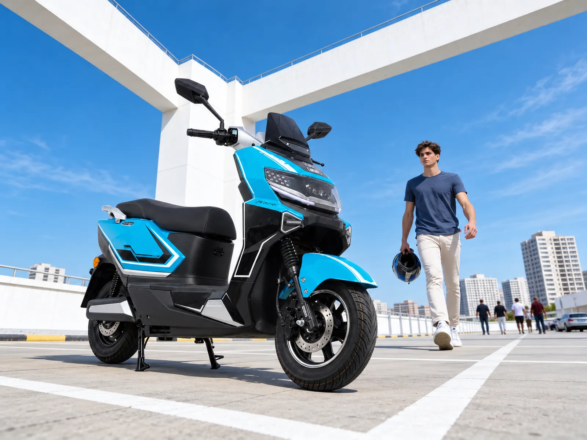

GODA Centurion.3000 W, sampai 100 km/jam.
Centurion (G18) adalah motor listrik baru GODA. GODA mengumumkannya pada 30 Oktober 2026. Ini ringkasan kami, dengan harga dan test ride di Moto Ijo.

Tenaga dan baterai.
Centurion memakai motor DC brushless 3000 W di roda belakang. Untuk akselerasi tambahan, ada boost mode. Dengan boost mode, kecepatan maksimumnya 100 km/jam.
Baterainya lithium LiFePO4 (LFP), 64V 40Ah. Menurut GODA, satu kali isi penuh cukup untuk sekitar 100 km. Jarak nyata bergantung pada berat beban, mode, dan kondisi jalan.
Ukuran dan kenyamanan.
Panjangnya 1.815 mm, lebarnya 780 mm, dan tingginya 1.200 mm. Jarak ke tanah 155 mm, cukup untuk melewati polisi tidur.
Suspensi depannya teleskopik. Suspensi belakangnya dual shock. Ban depan dan belakang berukuran 90/90-10.
Fitur harian.
Motor menyala dengan kartu NFC: tempelkan kartu, lalu jalan. Ada tiga mode berkendara. Mode mundur membantu saat parkir di tempat sempit.
Layarnya LCD digital. Semua lampu LED: lampu depan proyektor, lampu belakang, lampu sein, dan DRL. Ada port USB untuk mengecas ponsel di jalan.
Rem dan keamanan.
Rem cakram di roda depan dan belakang, dengan E-ABS (rem anti-kunci elektronik). Fitur brake power cut-off memutus tenaga motor saat rem ditarik. BMS multi-proteksi menjaga baterai.
Data ringkas.
| Hal | GODA Centurion G18 |
|---|---|
| Motor | DC brushless 3000 W, penggerak roda belakang |
| Kecepatan maksimum | 100 km/jam, dengan boost mode |
| Baterai | Lithium LiFePO4, 64V 40Ah |
| Jarak tempuh | Sekitar 100 km per isi penuh |
| Ukuran (P × L × T) | 1.815 × 780 × 1.200 mm, jarak ke tanah 155 mm |
| Suspensi | Teleskopik depan, dual shock belakang |
| Ban | 90/90-10, depan dan belakang |
| Rem | Cakram depan dan belakang, E-ABS |
| Warna | Hitam, putih, biru |
Harga di Moto Ijo.
Rp 17.499.000, menurut daftar harga Moto Ijo per 31 Oktober 2026. Angka ini sama dengan harga yang GODA umumkan.
Kamu bisa mencicil lewat Kredivo, Shopee PayLater, atau BSI Hasanah Card. Contohnya, dengan DP 20% (Rp 3.499.800) dan tenor 12 bulan, cicilan lewat Kredivo sekitar Rp 1.595.372 per bulan. Lewat BSI Hasanah Card (cicilan 0%), sekitar Rp 1.166.600 per bulan, belum termasuk ujrah kartu. Angka akhir dari penyedia cicilannya. Hitung cicilan Centurion.
Test ride gratis setiap hari, pukul 09.00 sampai 15.00, di showroom kami di Palmerah.
Sumber.
- GODA Indonesia, "Goda G18 Centurion: Motor Listrik Gahar yang Siap Bikin Kamu Dilirik di Jalan!", 30 Oktober 2026. godaindonesia.com/post/goda-g18-centurion-motor-listrik-gahar-yang-siap-bikin-kamu-dilirik-di-jalan
- Foto: GODA Indonesia.
- Harga dan cicilan: daftar harga Moto Ijo, 31 Oktober 2026.